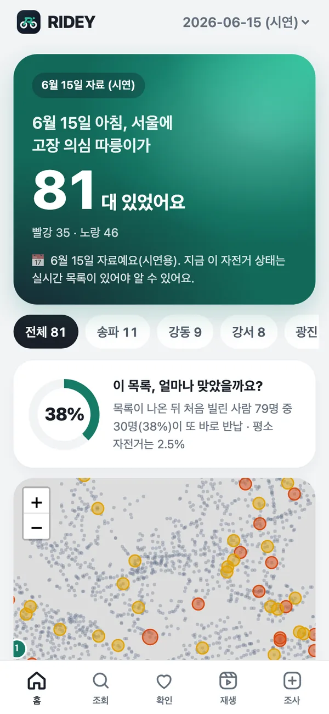

따릉이 고장 예보
타기 전에, 고장 난 따릉이를 먼저 알려 줄게요.
고장 난 따릉이를 빌렸다가 바로 반납한 적 있나요?
RIDEY는 앞사람들의 '빌리자마자 반납' 기록으로, 아무도 신고하지 않은 고장을 먼저 찾습니다.
서울 따릉이·대전 타슈 대여기록 약 1천만 건으로 검증 · 공개 데이터만 사용
실제 자전거 한 대
이 자전거는 12일 동안
73명을 돌려보냈습니다.
서울 강서구 · SPB-69683 · 2026년 6월 실제 대여 기록과 고장 신고
- 6월 12일 15:20첫 사람이 빌리자마자 같은 곳에 반납
- 15:43 · RIDEY 경보두 번째 사람도 — 서로 다른 두 사람이면 자전거 탓
- 6월 13일 07:58첫 고장 신고. 그런데도 그 뒤 54번 더 빌렸다가 바로 반납
- 6월 16일 07:13~07:50출근길 37분 사이 7명이 연달아
- 6월 24일 17:18두 번째 신고 뒤에야 더는 빌려지지 않음
RIDEY 라면 6월 12일 오후 3시 43분, 두 번째 사람이 반납한 그 순간
이 자전거는 정비 목록 맨 위에 올랐습니다. 그 뒤 71명에게 먼저 알 기회가 있었습니다.
자료: 서울 열린데이터광장 공공자전거 대여이력·고장신고 내역(2026년 6월). 같은 사람이 다시 해 본 것은 한 번으로 셌습니다.
왜 만들었나
신고는 귀찮고,
기록은 이미 있었습니다.
아무도 신고하지 않는 고장
따릉이 고장 신고는 매년 10만 건이 넘습니다. 그런데 고장 난 자전거를 만난 사람 대부분은 신고하지 않고, 그 자리에 반납한 뒤 옆 자전거를 빌립니다. 신고는 귀찮으니까요.
그 자전거는 앱에 '대여 가능' 으로 남아 다음 사람을 기다립니다. 공단은 누군가 신고해야 고장을 압니다.
빌리기 전에 피하고, 신고보다 먼저 고치기
이용자는 빌리기 전에 번호로 확인하고 옆 자전거를 고릅니다.
정비 기사는 신고가 들어오기 20~25시간 전에, 신고되지 않을 고장(49~61%)까지 목록으로 받습니다.
할 일을 늘리지 않고, 흔적을 읽는다
새 장비·센서·앱 가입 없이, 이미 공개된 대여기록만 씁니다. 누구에게도 "신고해 주세요" 라고 부탁하지 않습니다.
그래서 대여기록이 있는 어느 도시의 공공자전거에도, 전기차 충전기 같은 다른 공유 시설에도 그대로 옮길 수 있습니다.
사람들이 귀찮아서 안 하는 일, 고장 신고를
이미 남아 있는 '빌리자마자 반납' 기록이 대신합니다.
고장 신고 수: 헤럴드경제(2026년 9월) · 선행 시간·미신고 비율: 서울 2026년 1·3·6월 대여기록·고장신고로 측정
빌리기 전에, 번호로 확인해 보세요.
자전거 번호판이나 QR 옆의 번호(예: SPB-69683)를 넣으면 앞사람들의 기록을 알려 줍니다.
시연 자료: 2026년 6월 15일 아침 목록 (전날 자정까지의 실제 기록). 앱에서는 5분마다 갱신되는 실시간 목록으로, 어디서든 확인합니다.
작동 방식
두 번째 사람이
바로 반납하는 순간, 경보.
- 08:12A 가 빌렸다가 14초 만에 같은 곳에 반납헛대여 1
- 08:13A 가 다시 빌렸다가 9초 만에 반납같은 사람 — 안 셈
- 09:40B 가 빌렸다가 21초 만에 반납경보 · 노랑
- 10:05C 가 빌리기 전에 번호를 확인피하세요
- 10:06C 는 옆 자전거로 — 헛걸음 하나를 막음막음
고장 난 자전거를 빌린 사람은 신고하지 않고, 조용히 반납하고 옆 자전거로 갑니다. 신고는 귀찮으니까요. 대신 그 '빌리자마자 반납'이 공개 대여기록에 그대로 남습니다.
- 헛대여
- 같은 대여소에 3분 안에, 300m도 안 가고 반납한 대여.
- 서로 다른 사람
- 한 사람이 여러 번 해 본 건 한 번으로 셉니다. 생년·성별이 같으면 같은 사람, 그 자료가 없으면 반납 뒤 2분 안에 다시 빌린 사람을 같은 사람으로 봅니다.
- 경보
- 서로 다른 사람의 헛대여가 2명 이어지면 노랑, 3명이면 빨강.
- 끝
- 누군가 정상적으로 타고 가면 연쇄가 끊기고 경보도 꺼집니다.
검증 결과
앞사람이 포기할수록,
다음 사람도 포기합니다.
앞서 서로 다른 사람 몇 명이 바로 반납했나 → 다음 사람도 바로 반납한 비율
기준은 2026년 1월 기록으로만 정하고, 3·6월과 대전 타슈에 그대로 적용했습니다. 결과 차이는 ±2.3%p 안. 경보 한 건마다 그 뒤 처음 빌린 다른 사람만 세면 32~34% 가, 경보가 켜져 있는 동안 빌린 모든 사람을 세면 52~60% 가 또 헛걸음했습니다.
실시간
반납하자마자 기록이 옵니다.
그래서 5분마다 판단합니다.
- 1
누군가 반납
서울 열린데이터광장 대여이력 API 에 자전거 번호·대여/반납 시각·대여소가 곧바로 올라옵니다. 실측 지연 약 0분 — 기록이 평소보다 크게 줄면 앱이 알립니다.
- 2
5분마다 판단
맥 없이 클라우드 DB(Supabase) 안에서, 최근 7일 기록으로 자전거마다 연쇄를 다시 셉니다. 두 번째 사람이 바로 반납하면 다음 판단에서 경보가 켜집니다.
- 3
앱의 '지금' 목록 — 어디서든
이용자는 번호로 확인하고, 정비 기사는 구별 목록과 도는 순서를 받습니다. 현장 확인·현장 조사는 클라우드 DB 로 바로 갑니다.
- 4
스스로 채점
경보마다 다음에 빌린 다른 사람도 바로 반납했는지 기록합니다. 맞은 비율을 매일 봅니다.
실시간 자료가 검증한 자료와 같은가?
6월 15일 하루를 API 와 월별 공개 파일로 둘 다 받아 맞춰 봤습니다.
| 월별 파일 | 실시간 API | |
|---|---|---|
| 대여 | 150,827 | 150,830 |
| 헛대여 | 4,085 | 4,087 |
| 다음 날 아침 목록 | 79대 | 79대 · 같은 자전거 |
→ 파일로 잰 숫자가 실시간에도 그대로 섭니다. 처음 연 날 아침, 서울에선 82대가 서로 다른 사람들이 바로 반납한 채 서 있었고, 한 대는 21명이 연달아 포기한 자전거였습니다.
실시간 경보는 맞았을까?
32%경보 뒤 처음 빌린 다른 사람 1,420명 중 455명이 또 바로 반납
평소 자전거는 2.5%, 지난 기록(1·3·6월)으로 같은 방식은 32~34%. 95% 범위 30~35% · 채점을 기다리는 경보 110건 · 10월 1일 17:15 기준 (9월 27일부터 쌓는 중, 5분마다 새로 매김)
자체 모델 실시간 채점: 경보 때 모델이 말한 확률 평균 – · 실제 – (0건)
솔직한 기록: 처음엔 실시간 대여소 대수만 보고 "공개 자료로는 실시간이 안 된다"(정밀도 0.2~1.7%)고 결론 냈다가, 자전거별 대여이력 API 를 찾고 뒤집었습니다.
자료
공개 자료만으로,
사람을 따라가지 않고.
누구나 받을 수 있는 자료만 씁니다.
서울 열린데이터광장·공공데이터포털의 대여이력·고장신고·대여소 자료(공공누리 제1유형). 명령 하나로 모든 표를 다시 만들 수 있습니다.
사람이 아니라 자전거를 봅니다.
생년·성별은 '같은 사람이 다시 해 본 것' 을 거르는 데만 쓰고, 9일이 지나면 지웁니다. 없어도 됩니다 — "2분 안에 다시 빌리면 같은 사람" 으로 대신해도 정밀도 차이 0.2%p.
코드와 검증을 모두 공개합니다.
엔진·서버·웹앱·아이폰 앱·검증 스크립트와 보고서를 GitHub 에 올렸습니다. 올릴 때마다 자동 검사가 돕니다.
쓰는 사람
셋이 같이 씁니다.

누구에게 도움이 되나
고치는 사람이 먼저 알고,
빌리는 사람의 헛걸음이 줄어듭니다.
초록 표시는 실제 기록으로 잰 것, 파랑은 재는 중, 회색은 가능성입니다.
자전거를 고치는 쪽 — 가장 먼저
신고를 기다리지 않는 오늘의 정비 목록
- 정비 기사 측정신고보다 20~25시간 먼저, 끝내 신고되지 않을 고장(49~61%)까지. 하루 70~80대라 감당할 만한 양입니다.
- 정비 동선 측정근무 시간 안에 헛걸음을 가장 많이 막는 순서. 시간이 빠듯할 때 순위대로 돌기보다 12~17% 더 막습니다(6월 되짚기).
- 서울시설공단 가능성새 장비·비용 없이, 이미 가진 대여기록으로 신고에 기대지 않는 고장 현황판.
따릉이를 빌리는 사람
고장 자전거가 빨리 치워지면, 헛걸음 자체가 줄어듭니다
- 출근·통학하는 사람 측정경보가 있었다면 서울에서 하루 90~243건의 헛걸음을 막을 수 있었습니다. 번호로 직접 확인할 수도 있습니다.
- 관광객·어르신·처음 타는 사람 가능성이분들은 따로 앱을 깔지 않습니다. 공식 따릉이 앱의 자전거 고르는 화면에 "최근 서로 다른 N명이 바로 반납" 이 뜰 때 가장 도움이 됩니다.
같은 방법을 쓸 수 있는 곳
신고 대신 흔적을 읽는 곳이면 어디든
- 다른 도시 공공자전거 대전 검증대전 타슈에 서울 기준을 그대로 적용해 확인했습니다(다음 사람 41.6~43.6% 포기). 세종 어울링·창원 누비자도 대여기록만 있으면 됩니다.
- 전기차 운전자 신호 확인앱엔 '사용 가능' 인데 실제로는 안 되는 충전기. 연달아 두 번 바로 끊긴 충전기는 다음 충전도 36.5%(252대, 평소 2.7%) — 따릉이와 같은 모양입니다.
- 현장 확인 검증 도구하루 한 번 넘게 대여소를 도는 공단 직원(지나가는 이용자도 가능)이 의심 자전거 앞에서 탭 한 번 — 확인된 곳이 정비 순위 맨 위로 올라갑니다.
신고를 기다리지 않고, 공단이 오늘 고칠 자전거와 도는 순서를 알려 줍니다.
그러면 빌리는 사람의 헛걸음이 줄어듭니다.
넓히기 · 전기차 충전기
꽂았는데 안 되는 충전기도,
같은 방법으로.
앱에는 '사용 가능' 인데, 서로 다른 사람들이 연달아 3분도 안 돼 뽑고 간 충전기. 올해 8월 권익위가 '전기차 충전' 민원주의보를 낼 만큼(3년 새 1.8배) 흔한 불편입니다. 신고 대신 흔적을 읽는 방법은 자전거에만 쓰이지 않습니다.
한계
못 하는 것도 적어 둡니다.
- "고장" 정답이 없습니다고장 신고는 늦고 드물어서, 다음 사람의 헛걸음을 주 지표로 씁니다. 현장에서 자전거를 직접 보고 맞춰 보는 조사를 준비했습니다.
- 아무도 안 빌린 고장은 못 봅니다흔적이 있어야 찾습니다. 연쇄 뒤 이틀 넘게 서 있던 자전거는 이미 수거된 경우가 많아 목록에서 뺍니다.
- 고장 종류는 못 맞힙니다평균으로는 단말기 고장이 더 빨리 반납되지만, 한 대씩 맞히면 10~14% 뿐이라 종류는 사람이 확인합니다.
자주 묻는 질문
고장 신고랑 뭐가 다른가요?
신고는 사람이 앱을 열고 적어야 해서 늦고 드뭅니다. 서로 다른 사람의 연속 헛대여 중 절반 넘게(49~61%)는 7일이 지나도 신고가 없었습니다. RIDEY는 이미 남아 있는 대여기록을 읽으니 아무도 따로 할 일이 없습니다.
정확도가 왜 두 가지인가요?
경보 한 건마다 그 뒤 처음 빌린 다른 사람만 세면 32~34%, 경보가 켜져 있는 동안 빌린 모든 사람을 세면 52~60% 가 또 헛걸음했습니다. 뒤의 숫자는 21명 연속 같은 긴 연쇄가 크게 들어갑니다. 평소엔 2.5% 라서, 어느 쪽이든 10배가 넘습니다.
정말 실시간인가요?
네. 서울 대여이력 API 는 반납된 기록을 바로 줍니다(2026년 9월 25일 실측 지연 약 0분). 같은 날을 월별 공개 파일과 비교해 대여·헛대여·아침 목록이 모두 같다는 것도 확인했습니다. 클라우드 DB 가 5분마다 스스로 판단하고(맥이 꺼져 있어도), 경보가 맞았는지도 스스로 채점합니다. 다만 기록이 늘 고르게 오지는 않습니다 — 추석 당일(9월 25일) 14시부터는 평소의 2~5% 만 올라왔고, 그럴 땐 앱에 '자료 지연' 을 띄우고 그 시간이 낀 경보는 채점하지 않습니다.
다른 도시에서도 되나요?
대전 타슈 2025년 5·10월 기록에 서울 기준을 그대로 적용해 확인했습니다(두 사람이 포기한 뒤 다음 사람 41.6~43.6%). 대여기록만 있으면 어느 공공자전거에도 쓸 수 있습니다.
자전거 말고도 쓸 수 있나요?
같은 생각을 전기차 충전기에 옮기고 있습니다. 꽂았는데 바로 끊긴 충전이 서로 다른 사람에게서 이어지면, 앱에선 '사용 가능' 인데 실제론 고장인 충전기일 가능성이 큽니다. 서울 충전기 상태를 5분마다 모으는 중입니다. 첫날 배운 것: 사업자마다 기록 방식이 달라, 충전 중인데도 0초 충전을 남기는 곳이 있습니다. 이런 기록을 먼저 거르지 않으면 고장이 훨씬 많아 보입니다.
개인정보는요?
이름·연락처·이동 경로는 쓰지 않습니다. 공개 자료에 있는 생년·성별은 같은 사람의 재시도를 거르는 데만 쓰고, 서버는 9일 지난 기록을 지웁니다. 이 정보가 없어도 정밀도 차이는 0.2%p 입니다.